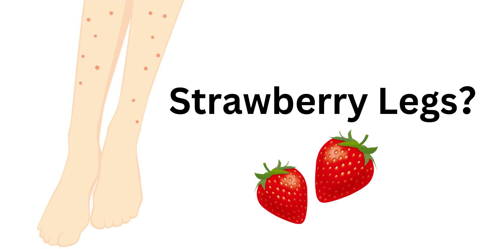
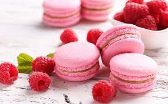
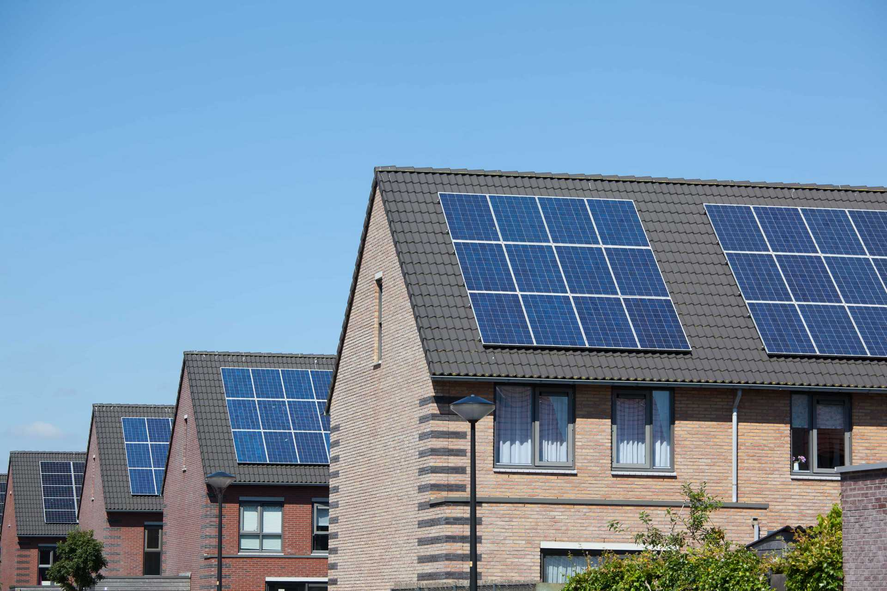

Strawberry legs? Ja mënyra për t'i hequr
Të gjithë hapat për 'të shpëtuar' nga strawberry legs, çka i shkakton ato dhe më shumë.

Ëmbëlsirat e vogla
Në një botë ku sheqeri nuk preferohet, ku ushqimet po bëhen gluten-free, kur ju kaplon nepsi për diçka të ëmbël, ëmbëlsirat e vogla janë zgjidhje perfekte.
Top 10 vendet që duhet t'i vizitoni
Sipas U.S. News Travel, ja top 10 vendet që duhet t'i konsideroni gjatë udhëtimeve tuaja, duke filluar nga Parisi deri te Tokyo
Çka është Fast Fashion
Çka është fast fashion, çfarë ndikimi e ka në botë dhe pse është kaq i përhapur?

Renovoni shtëpinë tuaj
Duke konsideruar gjendjen e planetit, nëse keni plan të bëni renovime, ja disa mënyra ekologjike për ta bërë këtë.

Ja si të përgatiteni për një intervistë pune
Intervistat e punës mund të jenë pa dyshim stresuese. Sigurohuni që të jeni në formën tuaj më të mirë duke ndjekur këto këshilla.